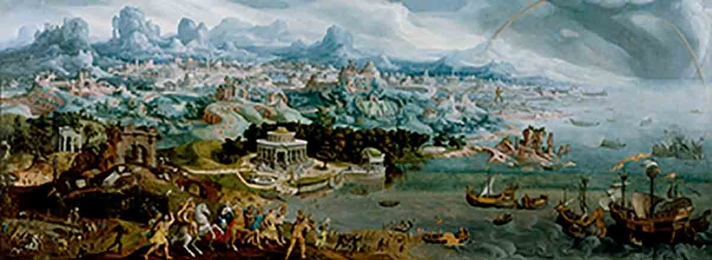

Museum of Antiquities
Seven wonders
Buy tickets
Now playing
This week

The Seven Wonders of the Ancient World
Remarkable constructions of classical antiquity almost completely lost in time.
The Seven Wonders
Great Pyramid of Giza
Date of construction:
2584–2561 BC
Builders:
Egyptians
Location:
Giza Necropolis, Egypt
Learn more about Giza
Hanging Gardens of Babylon
Date of construction:
Circa 600 BC
Builders:
Babylonians
Location:
Nineveh, Iraq
Learn more about the Hanging Gardens
Temple of Artemis
Date of construction:
Circa 550 BC
Builders:
Greeks
Location:
Selçuk, Turkey
Learn more about the Temple
Statue of Zeus at Olympia
Date of construction:
435 BC
Builders:
Greeks
Location:
Olympia, Greece
Learn more about the Statue
Mausoleum at Halicarnassus
Date of construction:
351 BC
Builders:
Persians
Location:
Bodrum, Turkey
Learn more about the Mausoleum
Colossus of Rhodes
Date of construction:
292–280 BC
Builders:
Greeks
Location:
Rhodes, Greece
Learn more about Colossus
Lighthouse of Alexandria
Date of construction:
Circa 280 BC
Builders:
Ptolemaic Egyptians
Location:
Alexandria, Egypt
Learn more about the Lighthouse
Buy tickets
Come explore the ancient wonders with our amazing teleportation technology that jumps you around the world.
$15 for adults
$5 for kids
Become a member Is one visit not enough? Join our yearly program for unlimited access.
$99 for adults
$39 for kids
Now playing on the large screen
Atlantis: Why we’re so mysterious
From allegory to fiction to mystery
See show times
This week at the museum
Saturday & Sunday
Atlantis city tours Underwater explorer: see outside the bubble
Monday
Try this out: have fun building your own ancient wonder Amazing architecture: explore the science of how the pyramids were built
Tuesday
Awesome art: witness art in action as a marble sculpture is born Gold rush: learn about the metal and why it was so coveted
Wednesday
Try this out: wear clothes that the ancients wore Gardenology: learn to plant and maintain amazing gardens
Thursday
Amazing architecture: explore the science of buildings Gardenology: the science behind trees and the environment
Friday
Atlantis city tours Awesome art: witness a full mosaic floor under construction